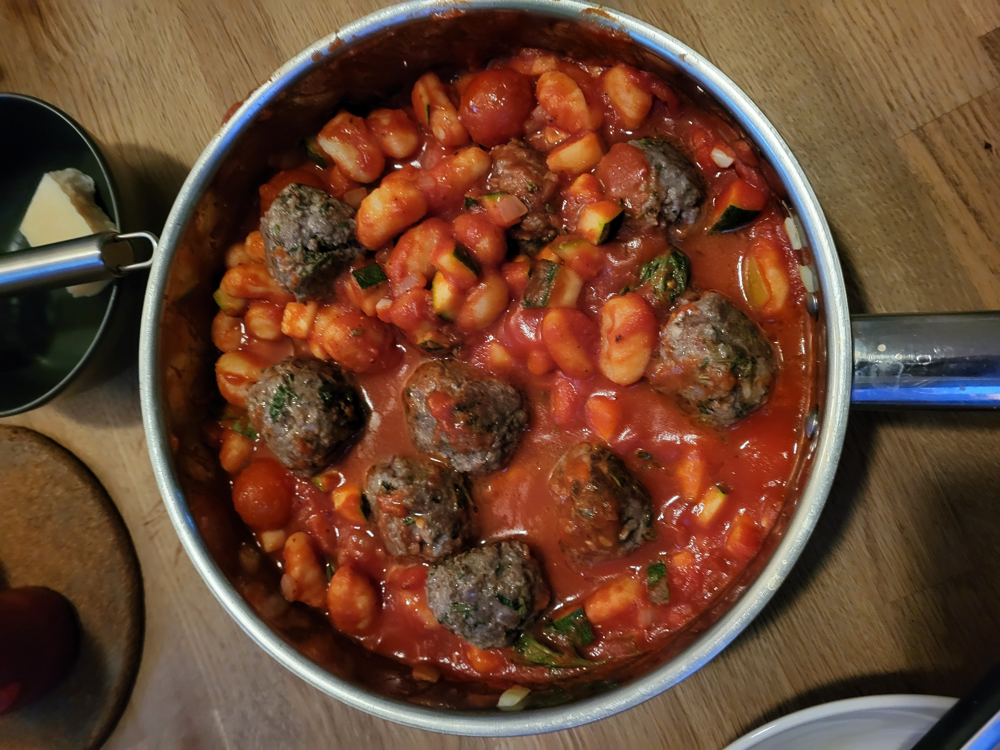

Gnocchi met gehaktballen

Description
Lekker snel gnocchi met gehaktballen.
Ingredients
-
Verse herbs
- rozemarijn
- tijm
- basilicum
- 500gr gehakt
- 1 pak gnocchi
- courgette
- tomaten
- tomaten passata
- parmezaanse kaas
- knoflook
- olijf olie
- zout & peper
Steps
- cut the herbs leave the taken.
- Make the meatballs
- Mix gehakt en kruieden in een kom.
- razp wat parmezaanse kaas
- mix alles en vorm balletjes
- verhit olijfolie en bak de gehaktballen beetje and then set aside.
- Cut the knoflook, ui and the courgette & the tomaten
- Verhit olijf olie en bak ui en knoflook
- Add courgette and tomatoes, bake beetje then add the passata and the rest of kruiden. Breng op smaak met zour en peper.
- add the gnocchi and gehakteballen. put the lid on and leave it sudderen voor 10 minuten
Home